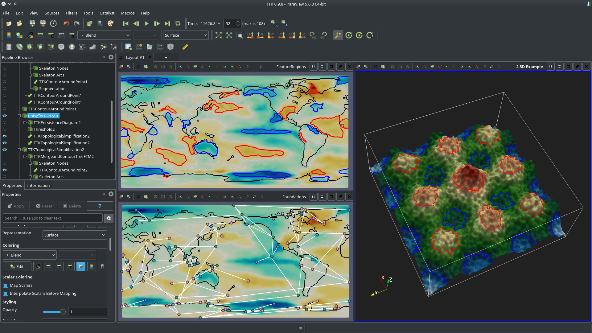

Enjoy our TTK eye candy with this gallery of screen-shots showing TTK features in action. Please visit our tutorial page for videos showing how to reproduce these visualizations with the example data-sets available from the download page.
A list of third-party projects using TTK is available here.
Scalar data |
Dragon demoTTK features in action: ContourTree (FTM), GeometrySmoother, IcospheresFromPoints, PersistenceCurve, PersistenceDiagram, ScalarFieldCriticalPoints, TopologicalSimplification.More details on the TTK example website! 
|
Morse persistence demoTTK features in action: IcospheresFromPoints, MorseSmaleComplex, PersistenceCurve, PersistenceDiagram, ScalarFieldSmoother, TopologicalSimplification.More details on the TTK example website! 
|
Built-in example 1TTK features in action: IcospheresFromPoints, PersistenceCurve, PersistenceDiagram, ScalarFieldCriticalPoints, ScalarFieldNormalizer, TopologicalSimplification.More details on the TTK example website! 
|
Interaction site demoTTK features in action: ContourTree (FTM), GeometrySmoother, IcospheresFromPoints, PersistenceCurve, PersistenceDiagram, ScalarFieldCriticalPoints, ScalarFieldNormalizer, TopologicalSimplification.More details on the TTK example website! 
|
Viscous fingering demoTTK features in action: ComponentSize, DistanceField, GeometrySmoother, IcospheresFromPoints, Identifiers, IntegralLines, PersistenceCurve, PersistenceDiagram, ScalarFieldCriticalPoints.
|
Morse molecule demoTTK features in action: GeometrySmoother, IcospheresFromPoints, MorseSmaleComplex.More details on the TTK example website! 
|
Tectonic puzzle demoTTK features in action: IcospheresFromPoints, IdentifierRandomizer, MorseSmaleComplex, PersistenceDiagram, TopologicalSimplification.More details on the TTK example website! 
|
Ocean vortices demoTTK features in action: ComponentSize, DistanceField, IcospheresFromPoints, IdentifierRandomizer, MergeTree, PersistenceDiagram, PointDataConvertor, TopologicalSimplification.
|
Contour around point demoTTK features in action: ContourAroundPoint MergeTree, PersistenceDiagram, TopologicalSimplification. |
CT bones demoTTK features in action: GeometrySmoother, IcospheresFromPoints, MergeTree, PersistenceDiagram, TopologicalSimplification.More details on the TTK example website! 
|
Tribute to Edelsbrunner & Harer's book (p. 217)TTK features in action: IcospheresFromPoints, IdentifierRandomizer, MorseSmaleComplex, PersistenceDiagram, TopologicalSimplification.More details on the TTK example website! 
|
Image processing demoTTK features in action: IcospheresFromPoints, IdentifierRandomizer, MorseSmaleComplex, PersistenceDiagram, TopologicalSimplification.More details on the TTK example website! 
|
Persistence driven compression demoTTK features in action: Persistence driven compression (file format: *.ttk).More details on the TTK example website! 
|
Harmonic skeleton demoTTK features in action: GeometrySmoother, HarmonicField, IcospheresFromPoints, Identifiers, PersistenceDiagram, Reeb graph (FTR), ScalarFieldNormalizer, TextureMapFromField, TopologicalSimplification.More details on the TTK example website! 
|
Morse-Smale quadrangulation demoTTK features in action: GeometrySmoother, IcospheresFromPoints, IdentifierRandomizer, MorseSmaleComplex, MorseSmaleQuadrangulation, PersistenceDiagram, QuadrangulationSubdivision, ScalarFieldNormalizer, TopologicalSimplification.More details on the TTK example website! 
|
Persistent generators AT demoTTK features in action: GeometrySmoother, IcospheresFromPoints, IdentifierRandomizer, MorseSmaleComplex, PersistentGenerators.More details on the TTK example website! 
|
Persistent generators dark sky demoTTK features in action: GeometrySmoother, IcospheresFromPoints, MorseSmaleComplex, PersistenceDiagram, PersistentGenerators, ScalarFieldSmoother, TopologicalSimplification.More details on the TTK example website! 
|
Bivariate scalar data |
Built-in example 2TTK features in action: ContinuousScatterplot, FiberSurface, JacobiSet, ProjectionFromField, RangePolygon.More details on the TTK example website! 
|
Bivariate toy demoTTK features in action: ContourTree (FTM), Fiber, GeometrySmoother, IcospheresFromPoints, JacobiSet, ProjectionFromField, ReebSpace, ScalarFieldCriticalPoints, TextureMapFromField.
|
Bivariate toy CSP peeling demoTTK features in action: ContinuousScatterplot, GeometrySmoother, ProjectionFromField, ReebSpace.
|
Mechanical demoTTK features in action: ContinuousScatterplot, GeometrySmoother, ProjectionFromField, ReebSpace.
|
Uncertain scalar data |
Built-in Example 3TTK features in action: IcospheresFromPoints, MandatoryCriticalPoints, PeristenceDiagram, ScalarFieldCriticalPoints, TopologicalSimplification.
|
Uncertain starting vortex demoTTK features in action: IcospheresFromPoints, MandatoryCriticalPoints, PeristenceDiagram, ScalarFieldCriticalPoints, TopologicalSimplification.More details on the TTK example website! 
|
Time-varying scalar data |
Time tracking demoTTK features in action: IcospheresFromPoints, PersistenceDiagram, PointDataSelector, TrackingFromFields.More details on the TTK example website! |
Merge tree feature tracking demoTTK features in action: IcospheresFromPoints, MergeTree (FTM), MergeTreeClustering (for fast Wasserstein distances), PersistenceDiagram. |
Merge tree temporal reduction demoTTK features in action: IcospheresFromPoints, MergeTree (FTM), MergeTreeTemporalReductionDecoding, MergeTreeTemporalReductionEncoding, PersistenceDiagram, PlanarGraphLayout, TopologicalSimplificationByPersistence.More details on the TTK example website! 
|
Nested tracking graph demoTTK features in action: AddFieldData, BlockAggregator, CinemaProductReader, CinemaQuery, CinemaReader, EndFor, ForEachRow, MeshGraph, PlanarGraphLayout, TrackingFromOverlap.More details on the TTK example website! |
Ensemble scalar data |
Persistence diagram distance demoTTK features in action: IcospheresFromPoints, PersistenceDiagram, PersistenceDiagramClustering (for fast Wasserstein distances).More details on the TTK example website! 
|
Persistence diagram clustering demoTTK features in action: IcospheresFromPoints, PersistenceDiagram, PersistenceDiagramClustering (for fast Wasserstein barycenters and clustering).More details on the TTK example website! 
|
Merge tree clustering demoTTK features in action: DimensionReduction, FlattenMultiBlock, IcospheresFromPoints, MergeTree (FTM), MergeTreeClustering, MergeTreeDistanceMatrix, PersistenceDiagram.More details on the TTK example website! 
|
Contour tree alignment demoTTK features in action: ArrayEditor, BlockAggregator, CinemaProductReader, CinemaReader, CinemaQuery, ContourTreeAlignment, Extract ForEach/EndFor, GridLayout PlanarGraphLayout.More details on the TTK example website! 
|
Persistent generators periodic picture demoTTK features in action: CinemaReader, CinemaProductReader, DataSetToTable, DimensionReduction, IcospheresFromPoints, MergeBlockTables, PersistentGenerators, RipsComplex, TableDataSelector, TableDistanceMatrix.More details on the TTK example website! 
|
Clustering Kelvin Helmholtz Instabilities demoTTK features in action: CinemaProductReader, CinemaQuery, CinemaReader, DimensionReduction, LDistanceMatrix, PersistenceDiagram, PersistenceDiagramClustering, PersistenceDiagramDistanceMatrix, ScalarFieldNormalizer, TriangulationManager.More details on the TTK example website! 
|
High-dimensional / point cloud data |
Persistence clustering gallery demoTTK features in action: GeometrySmoother, IcospheresFromPoints, MorseSmaleComplex, PersistenceDiagram, TopologicalSimplification.More details on the TTK example website! 
|
Persistence clustering0 demoTTK features in action: GeometrySmoother, IcospheresFromPoints, MorseSmaleComplex, PersistenceDiagram, TopologicalSimplification.More details on the TTK example website! 
|
Persistence clustering1 demoTTK features in action: GeometrySmoother, IcospheresFromPoints, MorseSmaleComplex, PersistenceDiagram, TopologicalSimplification.More details on the TTK example website! 
|
Persistence clustering2 demoTTK features in action: GeometrySmoother, IcospheresFromPoints, MorseSmaleComplex, PersistenceDiagram, TopologicalSimplification.More details on the TTK example website! 
|
Persistence clustering3 demoTTK features in action: GeometrySmoother, IcospheresFromPoints, MorseSmaleComplex, PersistenceDiagram, TopologicalSimplification.More details on the TTK example website! 
|
Persistence clustering4 demoTTK features in action: GeometrySmoother, IcospheresFromPoints, MorseSmaleComplex, PersistenceDiagram, TopologicalSimplification.More details on the TTK example website! 
|
Karhunen-Love Digits 64-Dimensions demoTTK features in action: DimensionReduction, GeometrySmoother, IcospheresFromPoints, IdentifierRandomizer, MorseSmaleComplex, PersistenceDiagram, TopologicalSimplification.More details on the TTK example website! 
|
1-manifold learning demoTTK features in action: DimensionReduction, GeometrySmoother, IcospheresFromPoints, MorseSmaleComplex, PersistenceDiagram, TopologicalSimplification.More details on the TTK example website! 
|
1-manifold learning circles demoTTK features in action: GeometrySmoother, IcospheresFromPoints, MorseSmaleComplex, PersistenceDiagram, TopologicalSimplification.More details on the TTK example website! 
|
2-manifold learning demoTTK features in action: GeometrySmoother, IcospheresFromPoints, MorseSmaleComplex, PersistenceDiagram, TopologicalSimplification.More details on the TTK example website! 
|
Persistent generators household analysis demoTTK features in action: DimensionReduction, GeometrySmoother, IcospheresFromPoints, IdentifierRandomizer, PersistentGenerators, PointSetToCurve, RipsComplex, TableDistanceMatrix.More details on the TTK example website! 
|
Misc features |
Persistent generators casting demoTTK features in action: EigenField, GeometrySmoother, IdentifierRandomizer, SurfaceGeometrySmoother, PersistentGenerators.More details on the TTK example website! 
|
Persistent generators fertility demoTTK features in action: EigenField, GeometrySmoother, IdentifierRandomizer, SurfaceGeometrySmoother, PersistentGenerators.More details on the TTK example website! 
|
Persistent generators skull demoTTK features in action: EigenField, GeometrySmoother, IdentifierRandomizer, SurfaceGeometrySmoother, PersistentGenerators.More details on the TTK example website! 
|
Manifold checksTTK features in action: IcospheresFromPoints, Identifiers, ManifoldCheck.More details on the TTK example website! 
|
In-situ features |
GeometryApproximationTTK features in action: CinemaImaging, CinemaLayout, DepthImageBasedGeometryApproximation, IcoSphere, IcospheresFromPoint.More details on the TTK example website! 
|
Cinema DarkroomTTK features in action: CinemaImaging, CinemaProductReader, CinemaReader, CinemaQuery, DarkroomCamera, DarkroomColorMapping, DarkroomCompositing, DarkroomFXAA, DarkroomIBS, DarkroomSSAO, DarkroomSSDoF, DarkroomSSSAO. Extract,
|
Third-party projects using TTK
· cricket-topology - Topological analysis of cricket players' positional data, by Adhitya Kamakshidasan.
· inviwo - Free configurable visualizations for scientific data (TTK modules), by the Inviwo team.

· ParaView - Multi-platform data analysis and visualization application, by Kitware Inc..
· topo-vol - Topology-driven transfer function design for volume rendering, by Will Usher and Qi Wu.